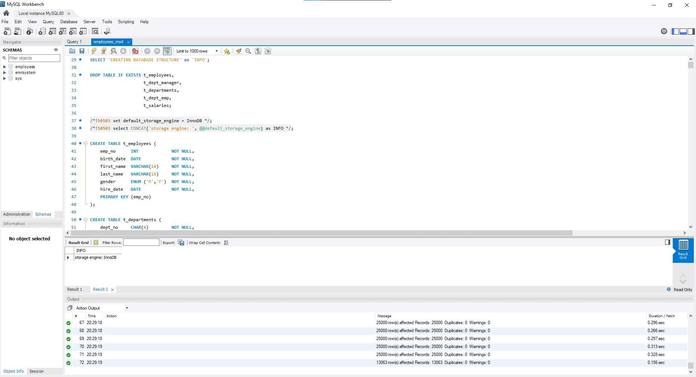

Project Details
()
Problem:
Solve Business Tasks in SQL and then use Tableau Desktop to create the charts and the dashboard asked in the
following questions:
Task 1: Create a visualization that provides a breakdown between the male and female employees working in the
company each year, starting from 1900.
Task 2: Compare the number of male managers to the number of female managers from different departments for each
year,
starting from 1990.
Task 3: Compare the average salary of female versus male employees in the entire company until year 2002, and
add a filter allowing you to see that per each department.
Task 4: Create an SQL stored procedure that will allow you to obtain the average male and female salary per
department within a certain salary range. Let this range be defined by two values the user can insert when
calling the procedure.
Finally, visualize the obtained result-set in Tableau as a double bar chart.
Task 5: Create a dashboard of the charts made for all tasks above.
Reference Resources:
After inserting employees data into MySQL:

Task 1:
A bar chart provides a breakdown between the male and female employees working in the company each year, starting from 1900:
Firstly, Retrieve the data of the male and female employees working in the company each year (starting from 1900) in MySQL.

Next, Inserting the data retrieved from SQL into Tableau

Finally, Visualize the obtained result-set in Tableau as a bar chart

In 1990, there were less than 20000 workers in the company while in 2002, there were more than 140000.However, the increase in number of employed work throughout the years has been constant, and the ratio between male and female employees in the company has always been 60% to 40% approximately.
Task 2:
An area chart to show the number of male managers to the number of female managers from different departments for each year, starting from 1990:
Firstly, Retrieve the data containing the number of male managers to the number of female managers from different departments for each year (starting from 1990) in MySQL.

Next, Inserting the data retrieved from SQL into Tableau

Finally, Visualize the obtained result-set in Tableau as an area chart

Task 3:
An line chart with a filter based on department to show the average salary of female versus male employees in the entire company until year 2002:
Firstly, Retrieve the data containing the average salary of female versus male employees in the entire company until year 2002 in MySQL.

Next, Inserting the data retrieved from SQL into Tableau

Finally, Visualize the obtained result-set in Tableau as a line chart

At the given time period, the salaries values have been augmenting constantly for any department. The average salaries of male and female employees were similar until 1993, and after that male employees were paid more with a few thousands of dollars difference per year.
Task 4:
Create an SQL stored procedure that will allow to obtain the average male and female salary per department within a certain salary range. Let this range be defined by two values the user can insert when calling the procedure. Finally, visualize the obtained result-set in Tableau as a double bar chart:
Firstly, Retrieve the data obtaining the average male and female salary per department within a certain salary range in MySQL.

Next, Inserting the data retrieved from SQL into Tableau

Finally, Visualize the obtained result-set in Tableau as a double bar chart

Task 5:
A dashboard of the charts made for all tasks above.